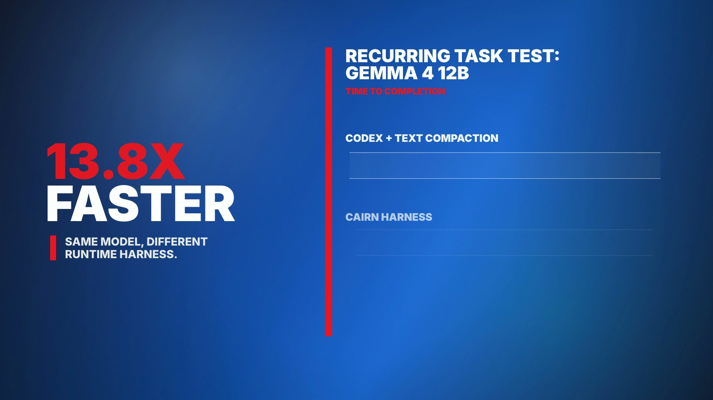
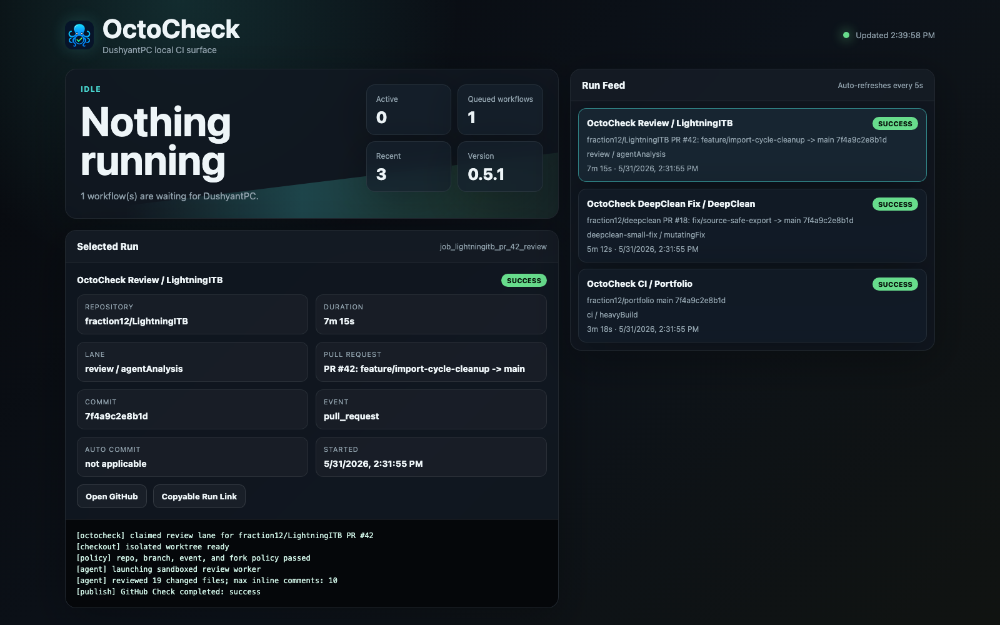
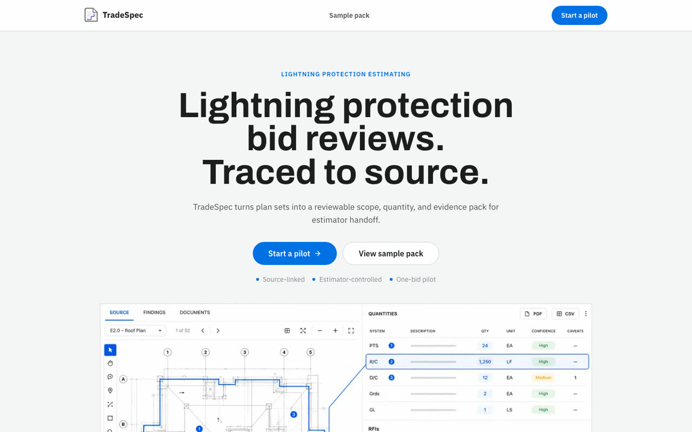
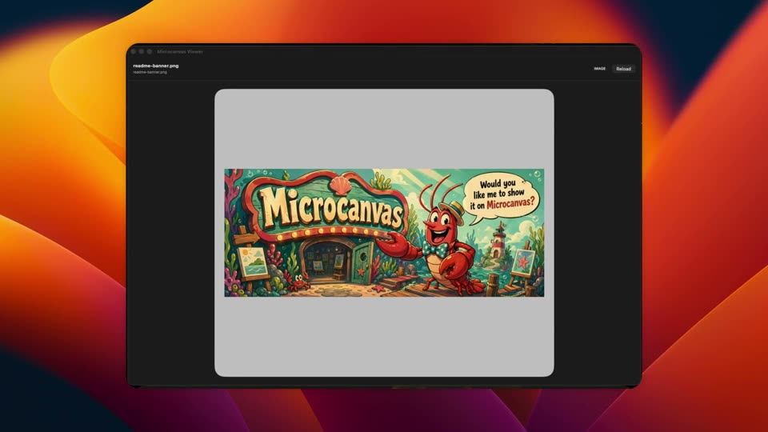

Five things I built. Each still is the real product, and the subtitle says what it does. Hover to see it in colour.

Same model, different runtime. The agent stops rereading what it already knows.

GitHub asks for the work. My machine decides what actually runs.

Every quantity in the bid points back to the sheet it came from.
Proposals, tasks and validation in one window instead of twelve folders.

Agents make things. This is where they show them, and prove they look right.
“Taste is the last thing you can't prompt for.”
Essays from Substack.